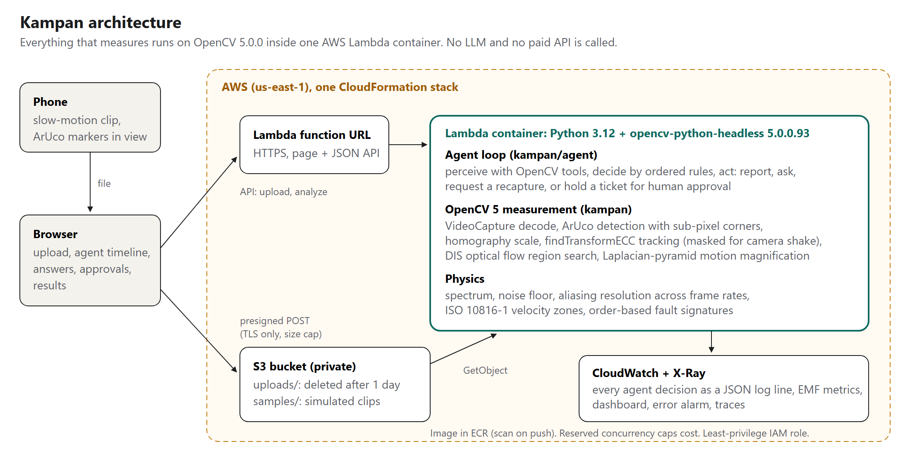
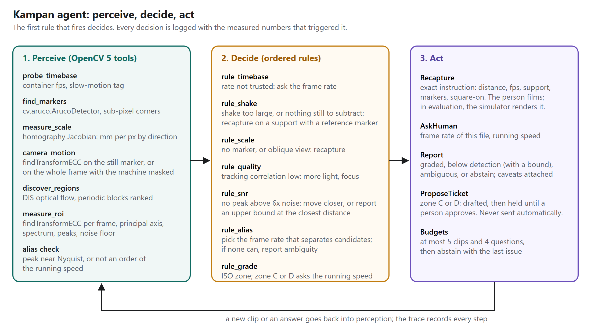

Technical report, OpenCV AI Competition 2026 powered by AWS. Author: Ashwin Goyal.
Vibration monitoring catches failing fans, pumps and motors before they break. Accelerometers and route-based analysis cost money and visits, so most small machines are never measured. A phone can film a machine at 120 or 240 fps, and OpenCV can track sub-pixel motion in that film. Commercial motion amplification products and research on Eulerian and phase-based magnification already show that video carries the signal.
The hard part is not extracting a number. It is knowing whether the number is true. A phone capture fails in five ordinary ways:
A pipeline that ignores these still prints a confident severity. Kampan's contribution is an agent that measures each condition with OpenCV 5, refuses to grade when one fails, and tells the person what to change in the next capture.

| Tool | OpenCV 5 functions | Output |
|---|---|---|
| Marker scale | aruco.ArucoDetector (DICT_4X4_50, sub-pixel corner refinement), getPerspectiveTransform |
mm per pixel along any direction, anisotropy |
| Tracking | findTransformECC (translation, warm-started from the previous frame), GaussianBlur |
x and y displacement per frame |
| Camera motion | ECC on a static reference marker; otherwise ECC on the whole frame with the target masked out | camera track to subtract |
| Region discovery | DISOpticalFlow (fast preset), block-averaged |
candidate vibrating regions when no marker is present |
| Magnified view | pyrDown, pyrUp, temporal IIR band-pass |
the video judges can see |
| Video input | VideoCapture, resize; Android capture-rate tag parsed from the MP4 |
frames and declared rates |
The spectrum uses a Hann window, zero padding and a median noise floor. A peak counts when it is at least 6 times the noise floor.

The agent is a deterministic policy over tool outputs. It uses no LLM and no paid API. Each capture produces an evidence record, and the rules run in a fixed order:
Limits on captures and questions keep the loop bounded. Every tool call, capture, decision and answer goes into a JSON trace. In the simulator the recapture is rendered; with real clips, the person films it.
One CloudFormation stack deploys the system.
The simulator renders a textured machine face with ArUco markers, known vibration tones, sensor noise, camera shake, perspective tilt and the container frame rate a phone would write. Ten scenarios each break one capture condition. The baseline is the same pipeline in a single pass with no checks. A run is correct when the dominant frequency is within 3% and the ISO zone matches the truth, or when a still machine is reported as still.
| Correct | Confidently wrong | Abstained | |
|---|---|---|---|
| Agent | 30/30 | 0 | 0 |
| Baseline | 15/30 | 12 | 3 |
Per-scenario results are in results/agent_vs_baseline.md. The baseline fails exactly where a capture condition is broken: untagged slow motion, hand shake with and without a reference, aliasing and a missing marker. The agent recovers each case with at most two recaptures and two questions.
| Noise (grey levels) | Amplitude (px) | Detected | Median frequency error (Hz) | Median amplitude error |
|---|---|---|---|---|
| 1 | 0.005 | 12/12 | 0.002 | 2.9% |
| 1 | 0.01 | 12/12 | 0.001 | 1.2% |
| 1 | 0.05 | 12/12 | 0.000 | 4.9% |
| 1 | 1 | 12/12 | 0.000 | 0.3% |
| 3 | 0.005 | 12/12 | 0.003 | 7.4% |
| 3 | 0.01 | 12/12 | 0.002 | 4.9% |
| 3 | 0.05 | 12/12 | 0.001 | 2.7% |
| 3 | 1 | 12/12 | 0.000 | 0.2% |
Selected rows; the full grid is in results/measurement.md. Amplitudes are peak displacement in pixels at 240 fps, over 2 s. Frequencies tested: 8, 21, 47 and 95 Hz, 3 seeds each.
Every amplitude in the grid was detected. That says more about the simulator than about phones: its sensor noise is independent per pixel, so averaging over the tracked patch removes most of it. Real clips add compression artefacts, rolling shutter and lighting flicker, which are correlated across the patch. The real detection limit has to come from real clips, and the agent's noise-floor check is what protects a reading in the meantime.
| Texture feature size | phaseCorrelate + Hann | phaseCorrelate | findTransformECC |
|---|---|---|---|
| 1 px | 40% | 14% | 12% |
| 2 px | 34% | 22% | 7% |
| 4 px | 102% | 70% | 7% |
Median absolute error of the sub-pixel shift over 0.05, 0.1 and 0.3 px shifts. Full table: results/estimators.md. Phase correlation's sub-pixel estimate depended on texture scale and halved horizontal motion on coarse texture. ECC stayed within 7 to 12%, so Kampan tracks with ECC.
cv2.phaseCorrelate with a window argument modifies both input arrays in place. Calling it twice on the same arrays
gives a different answer the second time. The same happens in OpenCV 4.12.0 and 5.0.0, so it is not new in 5.0.
Kampan passes copies. The check is in eval/check_phasecorrelate_inplace.py.
These are the ways Kampan failed during development or still can.
Instructions are in the README. The test suite, all three benchmarks and the deployment run from the repository.